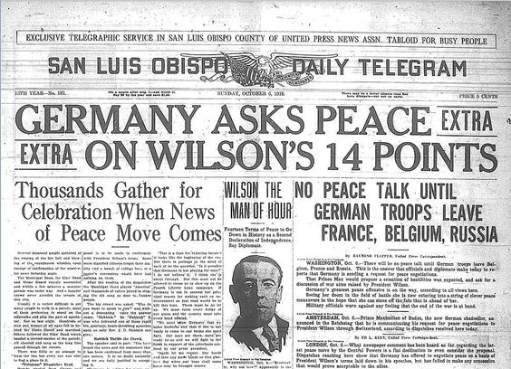
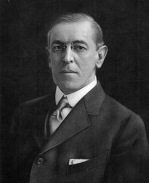

IF YOU CAN SEE THIS TEXT, YOU NEED TO ENABLE JAVASCRIPT FOR MANY FUNCTIONS OF THIS SITE
President Wilson had a plan for peace, on January 8th 1918 would give a speech on covering his plans for peace and giving countries the rights for their independence. Wilson would be awarded a Nobel Peace Prize for his attempts at making Europe a more peaceful region after World War 1 ended. Most of his points were met in the post war society due to the evacuation of held land during the war alongside the creation of new countries. Below are his 14 points:
I. Open covenants of peace, openly arrived at, after which there shall be no private international understandings of any kind but diplomacy shall proceed always frankly and in the public view.
II. Absolute freedom of navigation upon the seas, outside territorial waters, alike in peace and in war, except as the seas may be closed in whole or in part by international action for the enforcement of international covenants.
III. The removal, so far as possible, of all economic barriers and the establishment of an equality of trade conditions among all the nations consenting to the peace and associating themselves for its maintenance.
IV. Adequate guarantees given and taken that national armaments will be reduced to the lowest point consistent with domestic safety.
V. A free, open-minded, and absolutely impartial adjustment of all colonial claims, based upon a strict observance of the principle that in determining all such questions of sovereignty the interests of the populations concerned must have equal weight with the equitable claims of the government whose title is to be determined.
VI. The evacuation of all Russian territory and such a settlement of all questions affecting Russia as will secure the best and freest cooperation of the other nations of the world in obtaining for her an unhampered and unembarrassed opportunity for the independent determination of her own political development and national policy and assure her of a sincere welcome into the society of free nations under institutions of her own choosing; and, more than a welcome, assistance also of every kind that she may need and may herself desire. The treatment accorded Russia by her sister nations in the months to come will be the acid test of their good will, of their comprehension of her needs as distinguished from their own interests, and of their intelligent and unselfish sympathy.
VII. Belgium, the whole world will agree, must be evacuated and restored, without any attempt to limit the sovereignty which she enjoys in common with all other free nations. No other single act will serve as this will serve to restore confidence among the nations in the laws which they have themselves set and determined for the government of their relations with one another. Without this healing act the whole structure and validity of international law is forever impaired.
VIII. All French territory should be freed and the invaded portions restored, and the wrong done to France by Prussia in 1871 in the matter of Alsace-Lorraine, which has unsettled the peace of the world for nearly fifty years, should be righted, in order that peace may once more be made secure in the interest of all.
IX. A readjustment of the frontiers of Italy should be effected along clearly recognizable lines of nationality.
X. The peoples of Austria-Hungary, whose place among the nations we wish to see safeguarded and assured, should be accorded the freest opportunity to autonomous development.
XI. Rumania, Serbia, and Montenegro should be evacuated; occupied territories restored; Serbia accorded free and secure access to the sea; and the relations of the several Balkan states to one another determined by friendly counsel along historically established lines of allegiance and nationality; and international guarantees of the political and economic independence and territorial integrity of the several Balkan states should be entered into.
XII. The Turkish portion of the present Ottoman Empire should be assured a secure sovereignty, but the other nationalities which are now under Turkish rule should be assured an undoubted security of life and an absolutely unmolested opportunity of autonomous development, and the Dardanelles should be permanently opened as a free passage to the ships and commerce of all nations under international guarantees.
XIII. An independent Polish state should be erected which should include the territories inhabited by indisputably Polish populations, which should be assured a free and secure access to the sea, and whose political and economic independence and territorial integrity should be guaranteed by international covenant.
XIV. A general association of nations must be formed under specific covenants for the purpose of affording mutual guarantees of political independence and territorial integrity to great and small states alike.